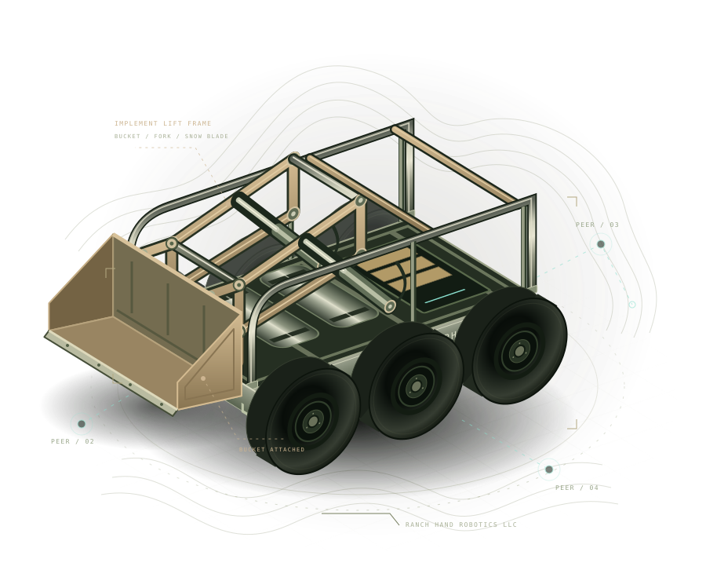

01.1
Peers, not dependencies.
Connect people and robots over traditional or mesh networks. Decentralized communication puts the connection where it belongs: between the peers.
DECENTRALIZED AT THE CORERobots. People. Wherever the work takes you.
Meet Decentralized Robotics. An open toolkit that connects robots and people over traditional and mesh networks. From rich teleoperation to the smallest signal that matters.

01 / THE PLATFORM
The field doesn’t come with a network.
Bring your own connection—not a whole
new way of building robots.
Connect people and robots over traditional or mesh networks. Decentralized communication puts the connection where it belongs: between the peers.
DECENTRALIZED AT THE COREVideo when you have the bandwidth. Telemetry and commands when you don’t. Work across civilian radio stacks, including LoRa and Wi-Fi HaLow.
HIGH & LOW BANDWIDTHExtend ROS 2, don’t replace it. Add peer identity, networking, and operator interfaces alongside your existing DDS-based communication.
BUILT TO WORK TOGETHER02 / EVERY SIGNAL HAS A PURPOSE
A live view from the robot. A position update from the far edge of the property. Different needs deserve different links.
Video, rich interfaces, and teleoperation.
IP networks and Wi-Fi HaLow.
Telemetry, status, and command & control.
Small, purposeful messages over LoRa.
Choose links for your hardware and conditions. Range and throughput depend on the radio, environment, and local regulations.
03 / OPEN BY NATURE
Use the pieces you need. Build what’s next.
Explore the tools behind the connection.
Bridges, command-line tools, and interfaces built around ROS 2, libp2p, and IPFS. Designed to give your project a starting point, not a ceiling.
Explore the developer guideThe ROS bridge protocol over libp2p. Connect your ROS 2 robot to a peer-to-peer network without replacing its local DDS communication. Robot guide ↗
Provision robot identities and associate users from the command line. Start with cryptographic peer identities for robots and people. Understand identities ↗
An IPFS-hosted web application for monitoring and controlling your robot through the libp2p network. Operator guide ↗
TypeScript tools for ROS 2 in the browser and Node.js, with Babylon.js-powered 3D and WebXR visualization. Developer guide ↗
04 / YOUR NEXT CONNECTION
Provision an identity, set up the bridge, and bring your ROS 2 robot into the network.
ROBOT SETUP ↗Create your operator identity and learn how to connect, monitor, and interact.
OPERATOR GUIDE ↗Explore the libraries and create your own applications, interfaces, and workflows.
DEVELOPER GUIDE ↗FROM RANCH HAND ROBOTICS LLC
DeRo starts with a simple idea: useful robotics shouldn’t end where the infrastructure does. See the thinking behind the project.
Our background